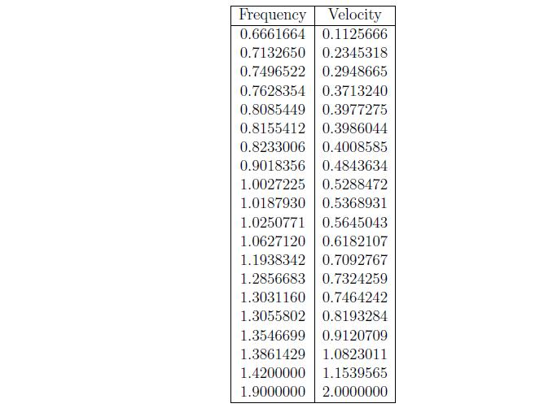
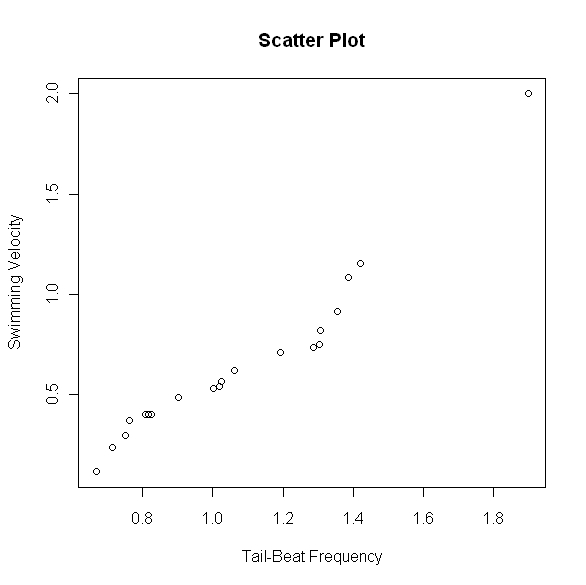
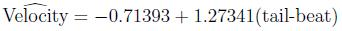
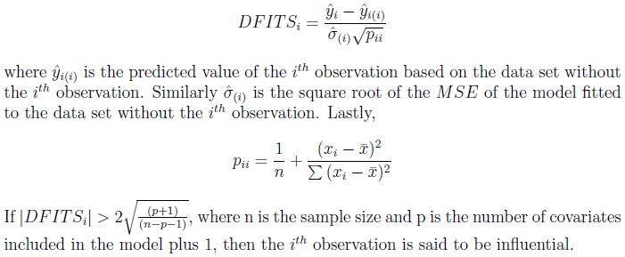
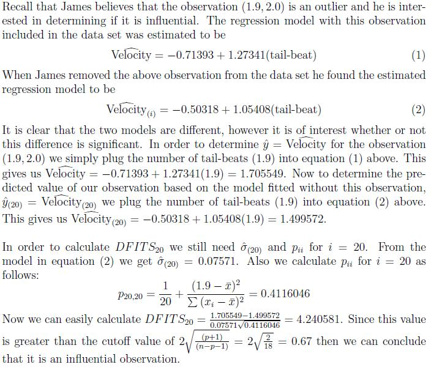
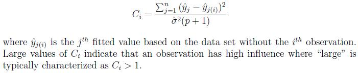

I Have An Outlier!
Lead Author(s): Erin Dienes
James is a biologist who is currently researching beluga whales. Currently he is interested in the relationship between the velocity at which the beluga whale swims and the tail-beat frequency of the whale. James took a sample of 20 whales and measured the swimming velocity, in units of body-lengths per second, and tail-beat frequency, in units of hertz. The following table shows the observed values for each variable.

James wants to visually determine what type of relationship (if any) exists between the swimming velocity and the tail-beat frequency. A scatter plot, which is simply a plot of the predictor variable on the x-axis and the response variable on the y-axis, is typically used for this purpose. James believes that the more tail-beats a whale has the faster that whale will swim. Thus the predictor variable in James' study is the tail-beat frequency and the response variable is the swimming velocity. A scatter plot of the relationship between the two variables is provided below.
From the above scatter plot, James noticed that there is an observation with an unusually large velocity compared to the others. He wants to know if this observation is an outlier and, if so, what his options are for dealing with it.
Detecting an Outlier
There are two ways in which to determine if an observation is an outlier. One method (z-score) only applies to data sets with frequency distributions that are mound shaped and symmetric. The other method has no such assumptions.
Calculate the Z-Score
In this procedure we calculate the z-score for each observation (fix this). Any z-score greater than 3 or less than -3 is considered to be an outlier. This rule of thumb is based on the empirical rule. From this rule we see that almost all of the data (99.7%) should be within three standard deviations from the mean. By calculating the z-score we are standardizing the observation, meaning the standard deviation is now 1. Thus from the empirical rule we expect 99.7% of the z-scores to be within -3 and 3.
James thinks that his observed velocity of 2.0 may be an outlier. In order to calculate the z-score, James first needs to calculate the mean and standard deviation of the observed velocities. He calculates the mean as 0.6549541 and the standard deviation as 0.4165770. Thus the z-score when x = 2.0 is z = (2 - 0.6549541)/0.4165770 = 3.228805. Since this value is greater than 3 James will consider this observation an outlier.
Calculate the Inner and Outer Fences
This procedure stems from the construction of a box plot. An observation is considered an outlier if it exceeds a distance of 1.5 times the interquartile range (IQR) below the lower quartile or above the upper quartile. The values of the lower quartile - 1.5 x IQR and upper quartile + 1.5 x IQR are known as the inner fences. Furthermore if the observation exceeds the lower quartile - 3 x IQR or the upper quartile + 3 x IQR then it is considered an extreme outlier. These values are known as the outer fences.
In order to determine whether his observation is an outlier by this criteria, James will need to calculate the quartiles, the interquartile range, and the fences.
Lower Quartile = 0.3984
Upper Quartile = 0.7647
IQR = 0.7647 - 0.3984 = 0.3663
Inner Fences = 0.3984 - 1.5(0.3663) = -0.15105
= 0.7647 + 1.5(0.3663) = 1.31415
Outer Fences = 0.3984 - 3(0.3663) = -0.7005
= 0.7647 + 3(0.3663) = 1.8636
From these values, James notices that not only is the velocity of 2.0 outside of the inner fences, implying its an outlier, but is also outside of the outer fences. Hence he concludes that his observation is an extreme outlier.
Dealing with an Outlier
Now that James has determined that the observation is indeed an outlier he needs to know what he can do with it. An outlier could be an observation that resulted from a mistake or other extraneous effect, or it could simply be a rare observation from the target population. James wants to be careful when considering removing the outlier from the analysis as it may convey significant information. A safe rule is to discard an outlier only if there is direct evidence that it represents an error in recording, a miscalculation, a malfunctioning of equipment, or a similar type of circumstance.
James has no such evidence and thus he will keep the observation for his analysis.
Outliers in Regression
Recall that James is interested in modelling the relationship between the swimming velocity of the beluga whales and the tail-beat frequency. Based on the scatterplot we can see that there appears to be a positive linear relationship between these two variables. Thus in order to model this relationship we will use simple linear regression. Fitting a line to this data yields the following fitted model

To interpret this model we say that as the number of tail-beats increases by one, then on average the velocity will increase by 1.27341 body-lengths per second. The above fitted model can be highly distorted by outliers hence James is interested in seeing how much his outlier is affecting the fit of the model. An observation is considered influential if its exclusion causes major changes in the fitted regression function. James will use two different measures to determine if his outlier is infuential.
- Influence on Single Fitted Value -- DFITS
- Influence on All Fitted Values -- Cook's Distance
DFITS
DFITS is a useful measure of the influence that observation i has on the fitted value. The formula is given by


Cook's Distance

In order to measure the influence of the observation (1.9, 2.0) on all the fitted values James calculates Cook's Distance. This calculation is a bit more computationally intense and thus we will simply give the calculated value. James finds the Cook's Distance of the above observation to be 3.789618 which is greater than 1. Hence the observation (1.9, 2.0) has high influence.
Based on the two measures of influence, James has concluded that the outlier has a high influence on his regression model. Because of this, and since James is unsure as to whether or not the observation is a mistake or from a different population, any inference he makes may be highly inaccurate.
A possible alternative approach would be to use a nonparametric method to model the relationship between the number of tail-beats and the swimming velocity of the beluga whale.
-- ErinEsp - 01 May 2010